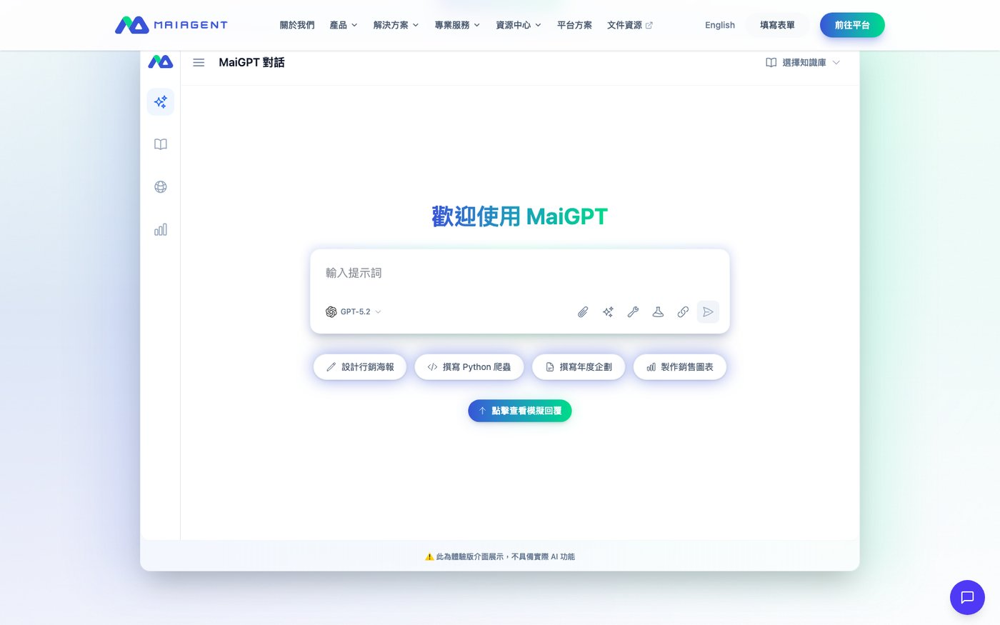
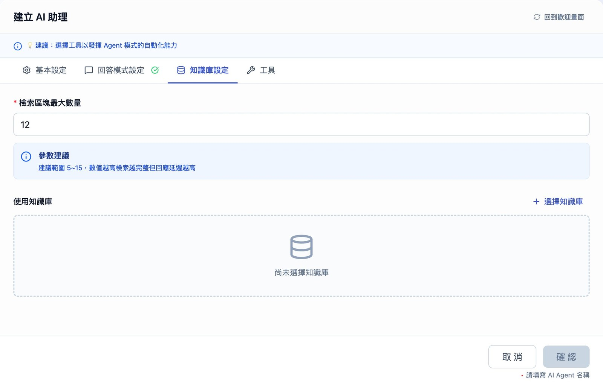
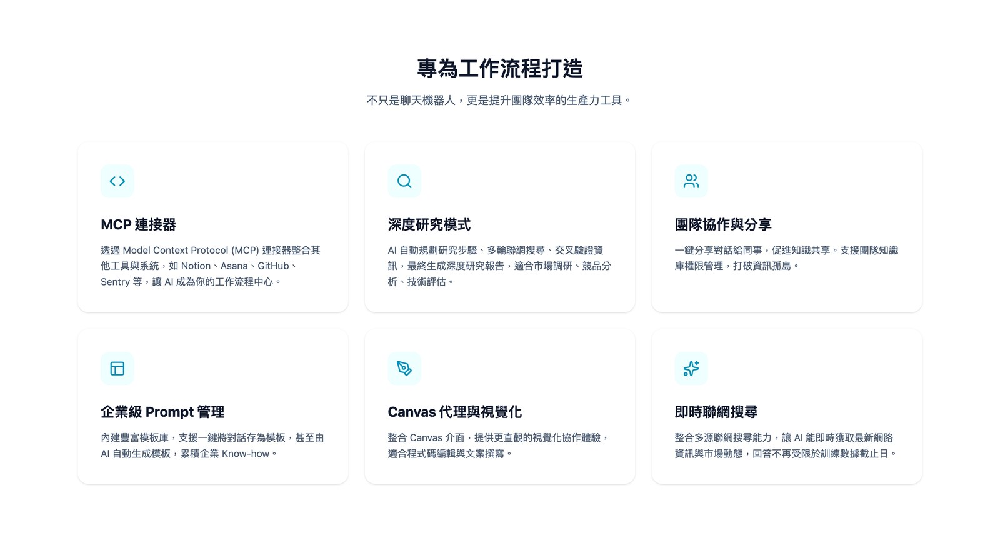
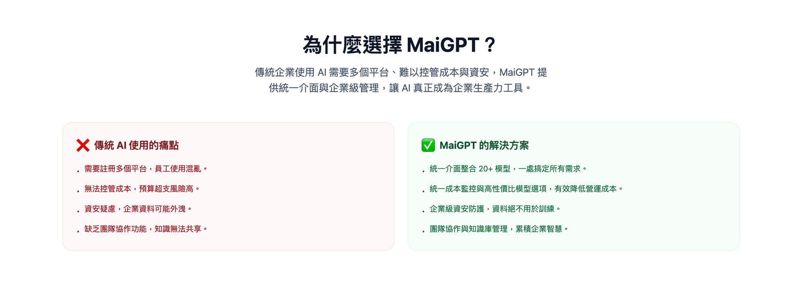
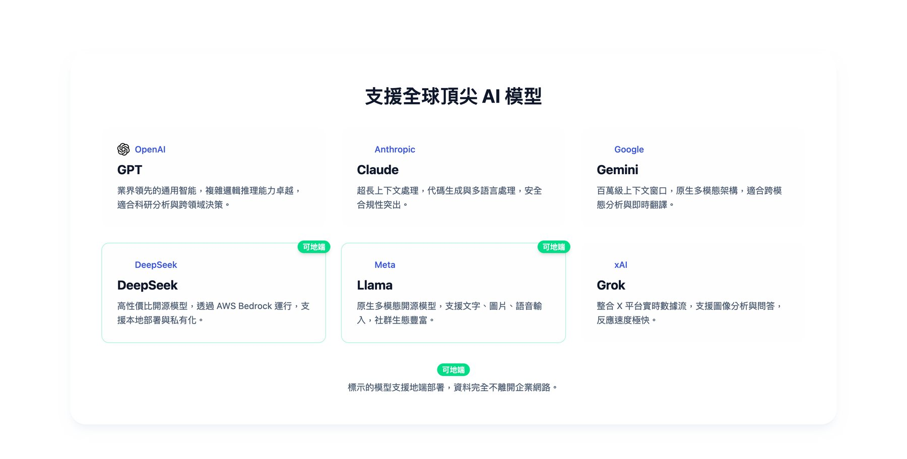

前端產品功能
兩個階段
第一階段處理模板管理、對話分享與知識庫建置流程。知識庫的建立入口原本分散於多個頁面，使用者須先確認從哪一頁進入；整併為單一入口後，加入空狀態引導與完成後自動返回。模板庫後續再進行一輪功能強化。
第二階段為 AI Store 改版與 Skills 整合：重整技能分類、改為分層顯示，並將頁面層級由六層精簡至三層。使用者從進入市集到看見一個技能實際能做什麼，點擊路徑縮短一半。另新增詳情概覽頁籤與重新設計的篩選器。
規格與 PRD
兩份功能 PRD
負責對話分享與 Prompt 模板庫兩份 PRD。撰寫規格前先在 Figma 整理使用者流程與介面草稿，確認流程走得通再展開文件，避免規格寫完才發現路徑有斷點。
對話分享的完整版範圍過大，無法於單一開發週期完成，因此另撰寫簡化版與極簡版，最終以極簡版排入實作。
另發現既有的產品功能表是依文件推測撰寫的，於是實際操作後台的每項功能，重新寫過一份。
規劃階段亦直接做出可操作的版本供團隊討論，而非僅以文件描述。
開發以 AI 輔助（Claude Code）進行。
實際畫面
點圖看原尺寸。



